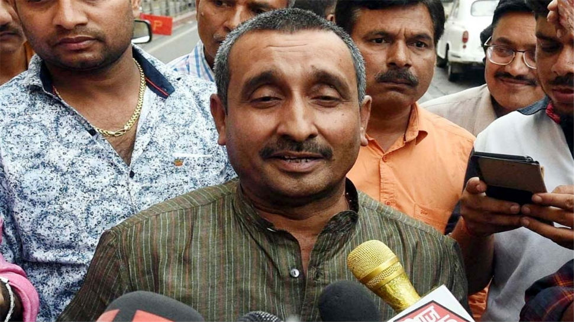
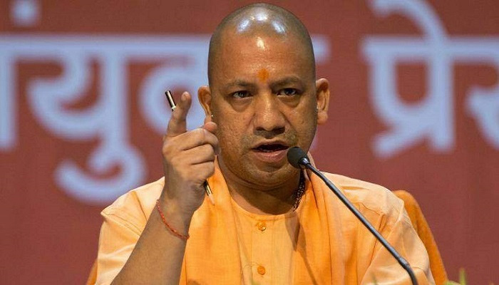
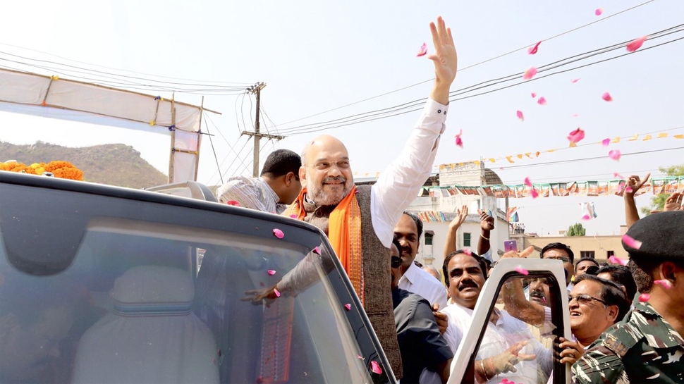
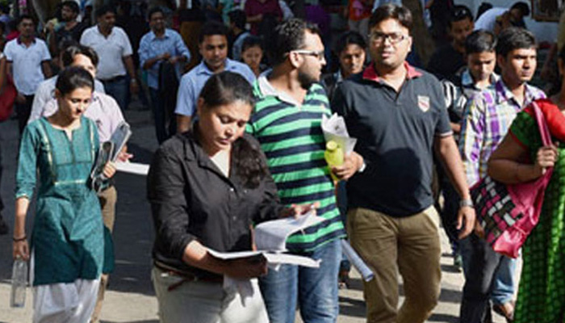

Unnao rape case: BJP MLA Kuldeep Sengar questioned for 16 hours, then arrested

Kuldeep Singh Sengar has maintained he is innocent but Allahabad High Court - while slamming UP Police - directed that he should be arrested.
New Delhi: The Central Bureau of Investigations (CBI) questioned BJP MLA Kuldeep Singh Sengar for over 16 hours on Friday before arresting him late Friday night. He has been accused of raping a minor in Unnao in what has now become a case being closely followed by the entire country.
Sengar was taken into custody on Friday after Allahabad High Court gave the green signal. He was questioned for most of the day and then arrested.
Accusations against Sengar and his eventual arrest comes as a major embarrassment for Uttar Pradesh's BJP government. The Yogi Adityanth-led government has been fighting fire ever since the rape survivor attempted to immolate herself outside the CM's residence last Sunday to demand action. Her father died in judicial custody the next day, almost a week after he was reportedly thrashed by the MLA's brother and others.
Family members of the survivor have previously said that the police had initially refused to register an FIR and had refused to take action against Sengar. On his part, Sengar remained defiant in claiming his innocence and even told Zee News that he would quit politics if charges against him were proven.
Investigations to prove one way or another actually began in earnest when Adityanath constituted a Special Investigation Team which handed its first report to CBI - handing over the investigations as well
UP govt to withdraw rape case against Swami Chinmayananda, victim opposes move

The Uttar Pradesh government has decided to withdraw a rape and kidnapping case against former Union minister Swami Chinmayananda. Following a letter in this regard by Yogi Adityanatah-led Bharatiya Janata Party (BJP) government, the district administration has begun correspondence through a senior prosecution officer.
However, sources said that the victim in the case has raised her objection over the development in the court. According to the victim, the BJP government must wait for a decision by the court in the matter as BJP itself has given the slogan of protecting women. Her move might lead to hindrance in quashing of the case against the former minister.
The victim has sent letters to the President, the Chief Justice of India, the UP Governor, the Chief minister and the district judge raising objections over the move, urging them for immediate issuance of a warrant against the accused. The victim, in her letter, also said that Adityanath on a visit to Shahjahanpur, had a lunch at the house of the accused on February 25, 2018.
Amit Shah meets BJP's 'sulking' alliance partners in UP, takes stock of upcoming legislative council polls

Lucknow: BJP president Amit Shah on Wednesday visited Uttar Pradesh to take stock of the preparations for the upcoming legislative council polls in the state and meet the party's 'sulking' alliance partners. The BJP national president, who took a day's off from the Karnataka assembly campaign, is understood to have taken a look at the names of probable party candidates for the legislative council polls.
The elections to the 13 seats will be held on April 26 with the ruling BJP being certain of winning at least 11 seats, going by its brute majority in the state legislative assembly.
Shah began his tour by garlanding the statue of Jyotibha Phule, sending a message that the saffron party did not want to keep the Dalits at an arms distance at a time when the Lok Sabha polls were barely a few months away.
UP Board 2018 Class 10, 12 Results likely in 5 days @ upresults.nic.in

Results of UP Board Class 10 and Class 12 are likely to be announced within five days, ie. April 15. Uttar Pradesh Madhyamik Shiksha Parishad (UPMSP) or the Board of High School and Intermediate Education Uttar Pradesh will announce the results on the official website upresults.nic.in. Over 66.37 lakh students took the board exams this year.
LUCKNOW: Results of UP Board Class 10 and Class 12 are likely to be announced within five days, ie. April 15. Uttar Pradesh Madhyamik Shiksha Parishad (UPMSP) or the Board of High School and Intermediate Education Uttar Pradesh will announce the results on the official website upresults.nic.in. Over 66.37 lakh students took the board exams this year.
Candidates can also check the results at upmspresults.up.nic.in, results.nic.in, indiaresults.com and examresults.net.
The UP Board exams for Class 10 was held from February 6 - February 22, while that of Class 12 from February 6 - March 12.